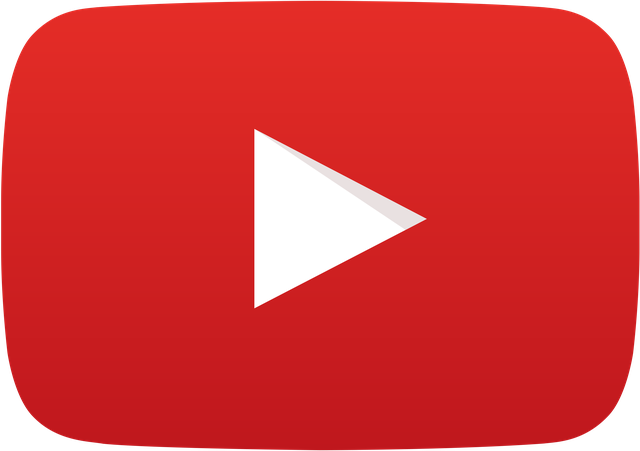

لقطات سريعة
Shorts
فيديوهات عمودية قصيرة تُشاهدها بسلاسة، مقطعًا وراء مقطع.
دليل عربي موجز موقع تعريفي غير رسمي
من مقطع قصير يغيّر مزاجك، إلى درس يفتح لك بابًا جديدًا — يوتيوب مساحة يلتقي فيها الفضول بالصوت والصورة.

اضغط فضولك… وشاهد أين يأخذكيوتيوب منصة لمشاهدة الفيديوهات ومشاركتها. يجتمع فيها صُنّاع المحتوى والمشاهدون حول اهتمامات لا حصر لها: التعلّم، الموسيقى، الألعاب، الرحلات، الحكايات، وأكثر.
«أن نتيح للجميع صوتًا، وأن نُريهم العالم.»— رسالة يوتيوب الرسمية، بصياغة عربية
مسارات مختلفة، وشاشة واحدة.
لا توجد طريقة واحدة للمشاهدة. انتقل بين فيديو عميق، بثّ مباشر، أو لقطة عمودية سريعة — حسب اللحظة التي تعيشها.
استكشف المحتوى على يوتيوبلقطات سريعة
فيديوهات عمودية قصيرة تُشاهدها بسلاسة، مقطعًا وراء مقطع.
وقت أطول للفكرة
شروحات، مراجعات، حكايات، ودروس من صُنّاع تتابعهم.
لحظة مشتركة
تابع حدثًا أو لقاءً حيًّا، وكن جزءًا من المحادثة.
توضح يوتيوب أن أنظمة البحث والاكتشاف تساعد كل مشاهد في العثور على فيديوهات تناسب اهتماماته. ومن الإشارات التي تنظر إليها: ما يشاهده الشخص، وما يتفاعل معه، وما يختار تجاهله.
لا توجد «وصفة سحرية» واحدة؛ التجربة تتشكل من اختياراتك وما تقدمه القنوات التي تتابعها.
اقرأ كيف تعمل التوصياتمن الفكرة الأولى… إلى مجتمع يتابعك.
اصنع. انشر. تعلّم.
يمكن لصُنّاع المحتوى إنشاء قناة ونشر الفيديوهات، ثم إدارة حضورهم عبر YouTube Studio — من تحديث معلومات القناة إلى متابعة الأداء والتعليقات.
دليل المبدعين الرسميمنصة لمشاهدة الفيديوهات ومشاركتها، تتيح للمستخدمين متابعة القنوات واستكشاف محتوى متنوع.
وفق إرشادات يوتيوب، سجّل الدخول بحساب Google، ثم أنشئ قناة من إعدادات حسابك. يمكنك بعد ذلك إعداد القناة ونشر الفيديوهات عبر YouTube Studio.
نعم. يمكنك مشاهدة الفيديوهات واستكشاف القنوات. أما مزايا مثل التعليق أو إنشاء قوائم تشغيل أو النشر فتتطلب تسجيل الدخول بحسب الميزة.
لا. هذه صفحة تعريفية مستقلة وغير رسمية، ولا تمثل YouTube أو Google. الروابط الرسمية تفتح مواقعها الأصلية.